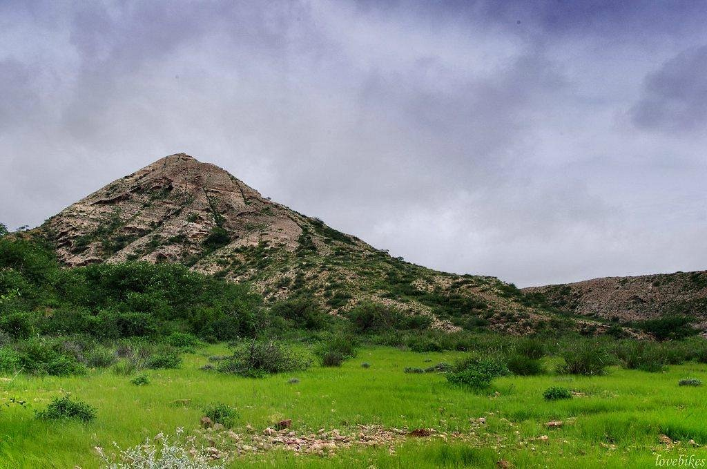

Introduction
Kirthar National Park is situated in the Kirthar Mountains in Karachi and Jamshoro District, Sindh. Established in 1974, it is the third-largest national park in Pakistan, covering over 3,000 square kilometers. It was the first national park in Pakistan to be included in the UN list of National Parks and Equivalent Reserves. The park is known for its arid beauty and rich history.
Landscapes & Ecosystems
The park consists of a series of limestone ridges and valleys running north-south. The terrain is rugged and arid, with sparse vegetation adapted to the desert climate. The Hub River flows through the park, providing a crucial water source for wildlife. The landscape is dotted with historical sites, including tombs and ancient settlements.
Biodiversity And Wildlife
Kirthar is the stronghold of the Sindh Ibex and Urial. Other mammals include the Chinkara Gazelle, Striped Hyena, Golden Jackal, and Desert Wolf. While leopards were once common, they are now rare. The park also supports a variety of reptiles and birds adapted to the dry environment.
Location On Map
Conservation Efforts
The park is managed by the Sindh Wildlife Department. Conservation efforts focus on anti-poaching patrols to protect the Ibex and Urial populations, which have seen recovery in recent years. The park also aims to promote eco-tourism while preserving the archaeological heritage found within its boundaries.